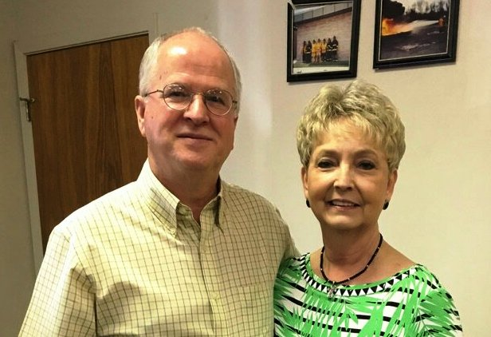

Karvin & Sandy Adams

(The banner above is the Flags of the
Metis Nation of Canada of which Karvin is a proud descendant. His French-Canadian
Karvin received a call to ministry while in
his teens. He is a graduate of Gulf-Coast Bible College (now Mid-America
Christian University). Sandy, who was raised by a Christian mother in
northeast Louisiana, was converted at the age of ten.
Since
1981, they have served as pastors in Louisiana, Arkansas, and Oklahoma and as
missionaries to Ecuador. In January 1997, they founded Partners in
Missions a 501 c 3 nonprofit, that works with the Indigenous Peoples and Mestizo
of the Americas. Karvin & Sandy
were the first Church of God missionaries from North America to Ecuador from
June 1992 - November 1996. They are the proud parents of two children; Marc, who
is a pastor; Karla and seven grandchildren.
Partners in Missions
helped build the D.S. Warner School in Peru that started in 2000 with
only five kindergarten children. It now has an enrollment of 180 children
in K - 6th Grade. Our computer lab has 3 times the number of
computers per student as the public schools. Several new families have
started attending the church as a result of the school's ministry to the
students and city. All classrooms are equipped with big screen TV’s with DVD
Players, security cameras and interactive smart boards.
We have held Church
Leadership conferences in four Latin America countries with leaders from 11 different countries attending.
To date
1,250 church leaders have been trained in
one of our seminaries.
PiM works with two
different orphanages in Guatemala, builds houses for widows and their children,
and also church buildings. We partner with a Guatemalan woman whose ministry
empowers women who have been abandoned by their husbands, by providing Vo-Tech
training that they may be self-sufficient, “Chance Project”. We have also
worked with a local Mayan Christian radio station that broadcast in the rural
western mountains of Guatemala.
Our ministry includes
taking people on trips to the mission field for hands-on experience of
cross-cultural ministry. Over 500 have gone on these 78 trips to date, doing
manual work as well as preaching, teaching; being the hands and hearts of
Christ.
Sandy and Karvin serve on the Board of Directors of the Chance Project in Guatemala. Karvin also served on the Board of Directors of the Prince of Peace Home for Girls in Guatemala.
His books "Is There Anything I Can Do?" about their missionary experiences and "New France in North America in 17th & 18th Centuries" about his French-Canadian ancestors, are available in eBook & paperback at Amazon.com : karvin adams.